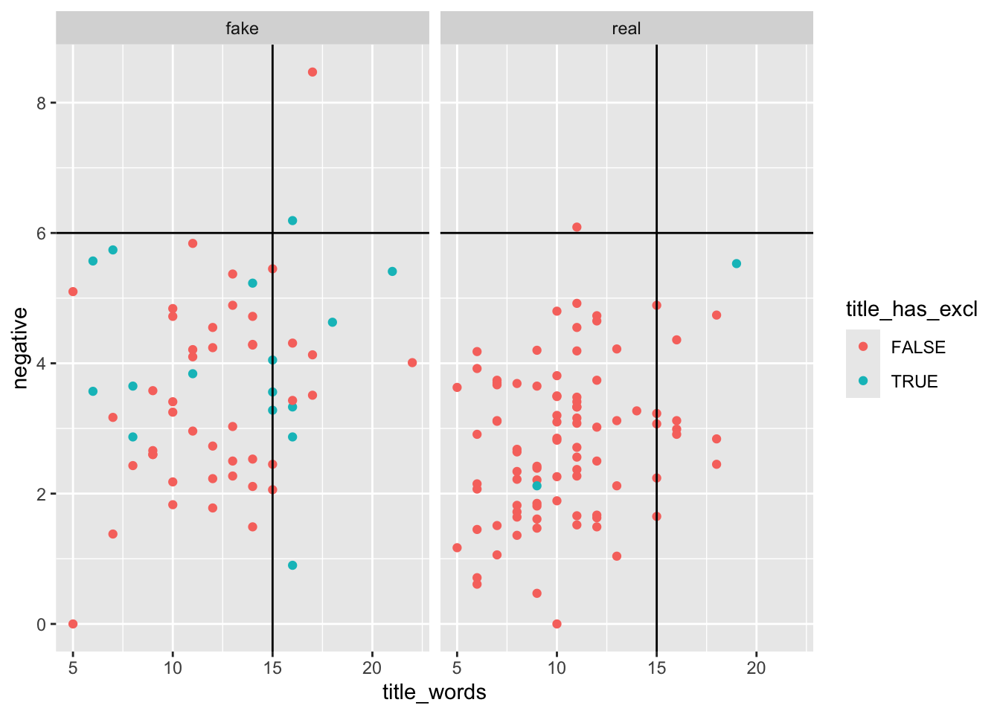

library(bayesrules)
library(tidyverse)
library(e1071)
library(titanic)
library(janitor)Naive Bayes Assignment
Load Libraries
True vs Fake News
Exercise 14.7 (Fake news: three predictors) Suppose a new news article is posted online – it has a 15-word title, 6% of its words have negative associations, and its title doesn’t have an exclamation point. We want to know if it is fake or real
Read in data
data(fake_news)Visualization (Exploratory Data Analysis) - 2 points
Use ggplot to visualize the features of the data we are interested in
Type (fake vs real)
Number of words in the title (numeric value)
Negative associations (numeric value)
Exclamation point in the title (true vs false)
ggplot(fake_news, aes(x = title_words, y = negative, color = title_has_excl)) +
geom_point() +
facet_wrap(~type) +
geom_vline(xintercept = 15) +
geom_hline(yintercept = 6)
Interpretation of Visualization - 2 points
Write a few sentences explaining whether or not this new news article is true or fake solely using your visualization above
Perform Naive Bayes Classification - 2 points
Based on these three features (15-word title, 6% of its words have negative associations, and its title doesn’t have an exclamation point), utilize naive Bayes classification to calculate the posterior probability that the article is real. Do so using naiveBayes() with predict().
naive_model_news <- naiveBayes(type ~ negative + title_words + title_has_excl, data = fake_news)our_article <- data.frame(negative = 6, title_words = 15, title_has_excl = "FALSE")predict(naive_model_news, newdata = our_article, type = "raw") fake real
[1,] 0.8775779 0.1224221Break Down the Model - 6 points
Similar to the penguins example, we are going to break down the model we created above. To do this we need to find:
Probability(15 - word title| article is real) using
dnorm()Probability(6% of words have negative associations | article is real) using
dnorm()Probability(no exclamation point in title | article is real)
Probability(15 - word title| article is fake) using
dnorm()Probability(6% of words have negative associations | article is fake) using
dnorm()Probability(no exclamation point in title | article is fake)
naive_model_news
Naive Bayes Classifier for Discrete Predictors
Call:
naiveBayes.default(x = X, y = Y, laplace = laplace)
A-priori probabilities:
Y
fake real
0.4 0.6
Conditional probabilities:
negative
Y [,1] [,2]
fake 3.606333 1.466429
real 2.806556 1.190917
title_words
Y [,1] [,2]
fake 12.31667 3.743884
real 10.42222 3.204554
title_has_excl
Y FALSE TRUE
fake 0.73333333 0.26666667
real 0.97777778 0.02222222Real
Negative Associations
dnorm(6, mean = 2.8, sd = 1.2)[1] 0.009496655Title Words
dnorm(15, mean = 10.4, sd = 3.2)[1] 0.04436553probs_true <- 0.6 * 0.009496655 * 0.04436553 * 0.97
probs_true[1] 0.0002452106Fake
Negative Associations
dnorm(6, mean = 3.6, sd = 1.5)[1] 0.07394722Title Words
dnorm(15, mean = 12.3, sd = 3.7)[1] 0.0826183probs_false <- 0.4 * 0.07394722 * 0.0826183 * 0.73
probs_false[1] 0.001783943probs_true / (probs_false + probs_true)[1] 0.1208438Confusion Matrix
fake_news <- fake_news %>%
mutate(predicted_type = predict(naive_model_news, newdata = .))fake_news %>%
tabyl(type, predicted_type) %>%
adorn_percentages("row") %>%
adorn_pct_formatting(digits = 2) %>%
adorn_ns type fake real
fake 48.33% (29) 51.67% (31)
real 12.22% (11) 87.78% (79)How can our model be improved?
naive_model_news_all <- naiveBayes(type ~ ., data = fake_news)fake_news <- fake_news %>%
mutate(predicted_type_all = predict(naive_model_news_all, newdata = .))fake_news %>%
tabyl(type, predicted_type_all) %>%
adorn_percentages("row") %>%
adorn_pct_formatting(digits = 2) %>%
adorn_ns type fake real
fake 96.67% (58) 3.33% (2)
real 2.22% (2) 97.78% (88)